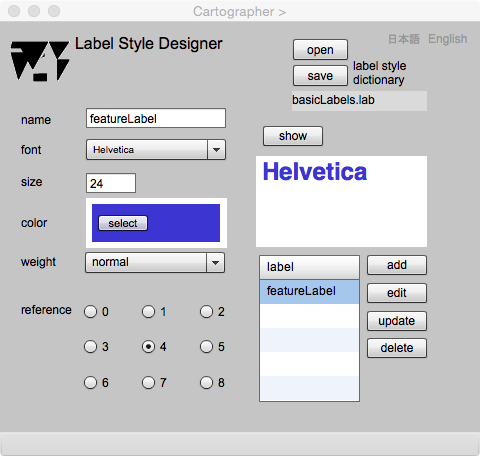

Label Style Designer
Introduction
A label put on maps is defined as a phrase or name applied to a feature for its classification. A label should be put so as to be clear which feature is annotated. Its font, size, and color should also be selected carefully. For example , the label size of important features are bigger than others.
It is possible to give information to users about features, if labels are designed by classes and grades of features. A label of a feature with higher grade should be bigger than others. Too many colors prevents user’s understanding. And the position should be near from the feature so as to be clear which feature is labeled. Initially, gittok automatically put labels at the center of features. However, you can shift them to the positions you like.
At this page, label style schema is explained, and then method of label style design is introduced.
Label style schema
Figure 1. Class diagram of label style schema
CLASSES
LabelStyleDictionary
This is a collection of label styles. It has a name ,and it associates to more than one label styles.
LabelStyle
This is a class of label styles, and it has identifier (id), name, font type(font), font size (fontSize), color, weight (bold or regular), transparencey (alpha) and reference position (reference) as attributes. The reference position is an origin point of the label (Figure 2). If you want to put reference position at the lower left corner of the label, number of the reference position is 6.

Figure 2. Reference position of a label
ROLL NAMES
labelStyles
A collection of label styles stored in the label style dictionary.
Label style designer

Figure 3. Screen of Label Style Designer
FIELDS
label style dictionary
The file name of label style dictionary is shown when the dictionary is opened or saved.
name (editable)
The name of the label style is shown.
font
Font style is shown as a result of selection.
size (editable)
The size of the font is show as a result of key-in.
weight
The thickness of the font canbe selected from normal or bold.
label
The list of label styles in the dictionary is shown.
BUTTONS
open
The label style dictionary is opened by clicking this button.
save
The label style dictionary is saved by clicking this button.
show
The sample label is diplayed in the box. It is possible to change the design as a result of observation.
add
The label style is added.
edit
The label style selected on the list can be edited.
update
The editedlabel style is updated.
delete
Thelabel style selected on the list can be deleted.